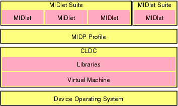
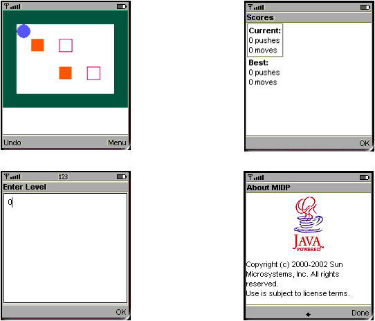
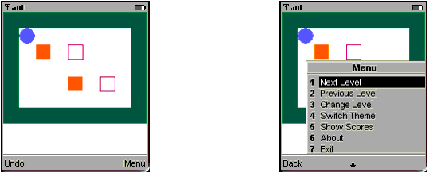
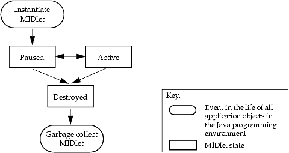
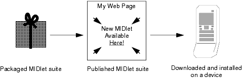

|
|
An application that runs in a MIDP environment is called a MIDlet. This chapter introduces MIDP Reference Implementation and MIDlets. It has the sections:
MIDP (Mobile Information Device Profile) is part of the Java™ 2 Platform, Micro Edition (J2ME™). MIDP defines the Java application environment for mobile information devices (MIDs), such as mobile phones and personal digital assistants (PDAs). It is built on top of the Connected Limited Device Configuration (CLDC) and conforms to the specification from the Mobile Information Device Profile 2.0 [JSR-000118]. See http://jcp.org/jsr/detail/118.jsp for the MIDP 2.0 Specification.
A application that is written in the Java programming language and runs in the MIDP environment is a MIDlet. Users do not download and launch MIDlets though. They download and launch MIDlet suites, one or more MIDlets packaged together for distribution, then run a MIDlet from the suite.
MIDlet suites are typically made up of MIDlets that perform a similar function (such as a group of MIDlets in a game-pack) or that work together (such as a MIDlet that provides restaurant reviews and one that makes restaurant reservations). MIDlets in the same suite can share resources, such as graphics and data. If a MIDlet stores information on a device, other MIDlets in its suite can access the information, and other MIDlets can be given permission to see it.
The following figure shows the J2ME platform architecture from the MIDP perspective:
[D]
This section covers the MIDP environment from the perspective of the MIDlet developer. From this perspective, the MIDlet environment is screen based. That is, after determining the tasks that users will perform with a MIDlet, a developer organizes the tasks into screens. Users navigate through the screens when they run the MIDlet.
For example, a game such as PushPuzzle might enable a user to make a move in the game, undo last move, restart the level, restart the entire game, set the level of play, view high scores, and get information about the game. These tasks could be be organized into:
Here are the screens of the PushPuzzle application:

MIDP has both structured and unstructured screens. Structured screens are more portable, but (with one exception, the CustomItem class) do not give the application access to low-level input mechanisms or control of the screen. Unstructured screens provides access to low-level I/O, but can be less portable. The screens in FIGURE 2 show both types of screens: the game-playing screen is an unstructured screen; the rest are structured screens.
The unstructured screen is called a canvas. It gives you control of the screen, enabling you to draw images and simple graphics (such as rectangles and lines). It also gives you access to low-level input mechanisms, such as key presses or touch input if it is supported by the device. Again, a canvas is useful when you need control of the screen (such as for an action game) but is more difficult to make portable than a structured screen.
There are a few types of structured screens. Each type serves a particular purpose, such as gathering text input, alerting users to important events, or giving users lists of choices. When you use a structured screen you provide only the content, such as the elements in a list. The MIDP implementation handles the look of structured screens (such as layout, fonts, and colors), as well as their low-level interactions with the user (such as scrolling). The MIDP implementation also notifies your application when the user takes an action, such as choosing OK on the screen in FIGURE 2 titled Enter Level. Because MIDP implementations handle the user interfaces and IO, a MIDlet that uses structured screens can run on many devices and, without code updates, look and behave like a native application.
An action associated with a screen, such as OK on the screen titled Enter Level in FIGURE 2, is called an abstract command. A screen can have any number of abstract commands; each screen should have at least one. Abstract commands enable you to define actions without specifying their user interface. MIDP implementations determine their presentation. This makes abstract commands portable, like structured screens. MIDlets that use them can look and behave appropriately on different devices without code changes.
When presenting abstract commands, MIDP implementations conform to the conventions of the device (within the constraints of the MIDP 2.0 Specification). Some implementations might use buttons, others menus, and so on. The MIDP Reference Implementation uses various buttons and, if there are more abstract commands after doing the standard mappings, creates a menu for them (a system menu). The following figure shows a screen that required a system menu, and the system menu that appears when the user chooses the Menu command.

In summary, the MIDP environment is screen-based. When you design and implement a MIDlet, you need to organize its tasks into a set of screens. The screens can be either structured screens (which are more portable) or unstructured screens (if you need low-level I/O control). Each screen should have one or more associated actions, called abstract commands, that enable a user to carry out their tasks when they run the MIDlet.
The life cycle of a MIDlet consists of three states:
A newly instantiated MIDlet is in the Paused state. A paused MIDlet probably holds fewer resources than an active MIDlet.
A destroyed MIDlet is eligible to be garbage collected.
A MIDlet can move between the paused and active states any number of times. It cannot move from the destroyed state.
The following figure shows the life-cycle of a MIDlet:
[D]
The next chapter, which tells you how to create a MIDlet, maps the MIDlet states onto the MIDlet’s methods.
Before a MIDlet can be run, it must be put onto the device. From an end-user’s perspective, that means downloading and installing a packaged MIDlet suite. (See Using MIDP for more information.) To enable users to get a MIDlet suite on the device, developers must package and publish the MIDlet. (These steps are covered in Chapter 4, "Packaging a MIDlet,” and “Chapter 5, "Publishing a MIDlet.”)

Whether the device accepts the MIDlet that the user is trying to download and install depends on the security policy of the device. A security policy defines which security-sensitive actions MIDlet suites might be permitted to perform. If the MIDlet suite must perform an action that the device cannot allow, the device will not download and install the suite.
Security policies, and the ability to restrict access to security-sensitive APIs, is new to the MIDP 2.0 Specification. The specification also includes the concept of a trusted MIDlet suite, which is a MIDlet suite that originates from a trusted source and has not been tampered with. Typically a trusted MIDlet suite can perform more actions than an untrusted one.
The procedure for determining whether a MIDlet suite is trusted is device-dependent. The MIDP Reference Implementation checks the digital signature of the MIDlet suite. (See Using MIDP for more information.) Because checking a digital signature is one way of establishing trust, signing a suite when you package it will improve the chances that devices will trust your MIDlet suite. The security policies of individual devices, however, will determine whether particular users can download and effectively use your MIDlet suite.
When a device defines its security policy, it uses permissions. A permission is a string that represents a security-sensitive class, package, or functionality. A security policy associates permissions with an interaction mode (such as Allowed). When you write a MIDlet, you need to be aware of which APIs are security sensitive; "APIs and Security" lists them. When you package your MIDlet into a MIDlet suite, you need to list the permissions that your MIDlet would like to have and the permissions that it requires; "Creating a JAR File" tells you how. This section explains how permissions are named.
The name of a permission indicates what it is protecting. If a permission is protecting a package or class, it has the package or class name. For example, a permission that protects the entire input/output package would be named javax.microedition.io, while a permission that protects the PushRegistry class would be called javax.microedition.io.PushRegistry. If a permission is protecting some functionality that a package or class provides, it has the package or class name as a prefix, followed by a name for the functionality. For example, a permission that protects the HTTP functionality made available through the Connector class would be called javax.microedition.io.Connector.http.
The MIDP 2.0 Specification defines the following permission names:
|
|
Creating MIDlet Suites MIDP Reference Implementation, Version 2.0 FCS |
Copyright © 2002 Sun Microsystems, Inc. All rights reserved.